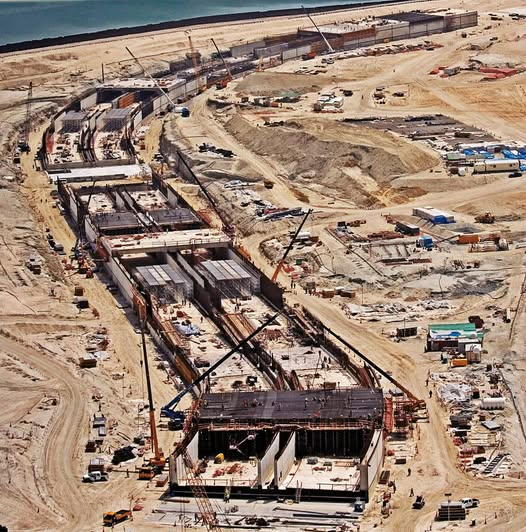

The Palm Jumeirah is one of the most recognisable man-made structures on earth — a palm-shaped artificial archipelago off the coast of Dubai that became a global symbol of the UAE's engineering ambition. At its heart is a 1.4km vehicular tunnel running beneath the waters of the Arabian Gulf, connecting the Palm's trunk to its crescent — one of the most technically demanding forms of civil engineering, with zero tolerance for sequencing errors.
PROJACS International served as Project Management Consultant, and Shabih played a key role in project controls and schedule administration — while simultaneously delivering the record-breaking Shuweihat Water Transmission Scheme implementation in Abu Dhabi.

Subaqueous construction — zero sequencing margin
Tunnel construction beneath the Arabian Gulf required precise schedule management under high-profile pressure. Tracking progress, managing resource loading, and maintaining cost-loaded schedules in a subaqueous environment with dozens of contractor interfaces demanded precision project controls.

Rigorous schedule admin + app stewardship
Managed regular update cycles in Primavera Expedition — incorporating contractor progress, revised sequences, and resource loading. Served as Application Steward ensuring data accuracy on a program where every stakeholder was watching.
Schedule Updates & Baseline Management
Managed regular schedule update cycles — incorporating contractor progress reports and revised sequences into the project baseline, maintaining the integrity of the cost-loaded baseline for earned value measurement.
Resource & Cost Tracking
Administered resource loading and cost tracking in Primavera Expedition — labour, equipment, and material resources accurately reflected, with actual costs current for reporting and forecasting.
Progress Reporting & Variance Analysis
Prepared regular progress reports highlighting schedule variances, critical path changes, and risk areas. Provided variance analysis to help the team understand causes of deviation and recovery actions required.
System Administration (App Steward)
Served as Application Steward — managing user access, system configuration, data quality controls, and platform governance to ensure Primavera remained a reliable source of project controls data throughout construction.
Parallel Delivery with Shuweihat WTS
This engagement ran concurrently with the Shuweihat implementation — managing two demanding programs simultaneously built the multi-program delivery capability that became a hallmark of all subsequent roles.